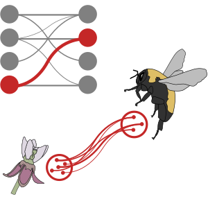
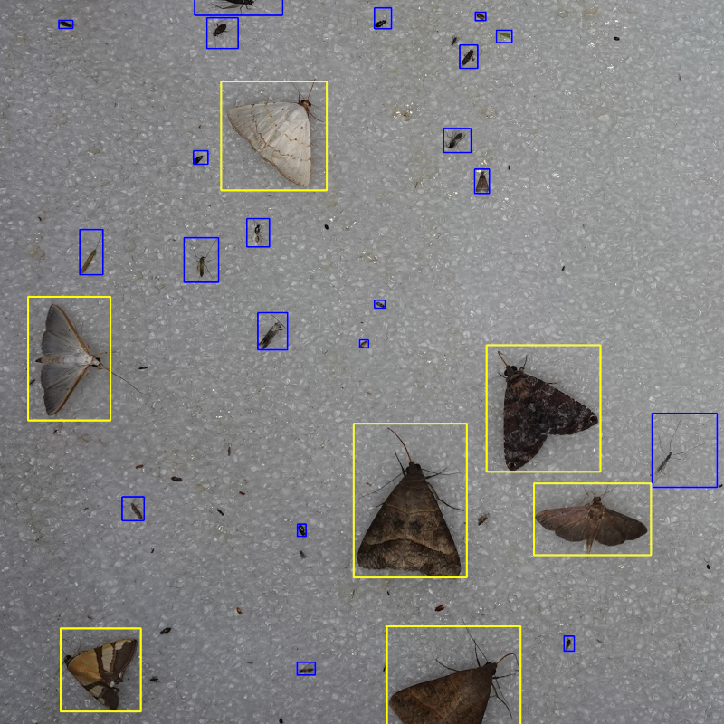

Individual variation in pollinator networks
- How do individual interactions contribute to the complexity of plant - pollinator networks? How does intraspecific diversity buffer plant - pollinator ecosystems against drought?

A longstanding prediction in ecology is that biodiversity should act to buffer ecosystems against stress: as portions of a community vary in their responses to stressors, the community as a whole becomes both more resistant to stress and more resilient when stressors are removed. Yet the mechanisms underpinning these patterns and the contributions of biodiversity within species to ecosystem resilience are not well understood.
While pollinator research frequently focuses on interactions at the species level, species - species interactions ultimately emerge from the interactions of individual insects with individual flowers. The complexity of individual interaction networks and the plasticity of individual behaviors have the potential to buffer plant - pollinator ecosystems against climatic stressors like drought at magnitudes similar to biodiversity at the level of species.
My research applies gas chromatography and automated insect monitoring to study genotypic, chemical, and interaction diversity in plant - pollinator systems in the lab and field to understand how biodiversity across and within species buffers these ecosystems against drought stress.
Large scale patterns in insect biodiversity
- How is function and diversity being altered in insect ecosystems in the Anthropocene? How can machine learning facilitate surveys of biodiveristy and insect behavior in the field?

Insect biodiversity is under threat globally from a complex mixture of human driven stressors. Large scale changes in insect abundance and diversity are already altering function across terrestrial ecosystems, but how ecosystems will change as biodiversity loss intensifies is not well understood.
I am currently focused on tropical insect biodiversity in Central and South America to understand how insect biodiversity is changing over large spatial and temporal scales in response to human driven change, and to untangle how losses of insect diversity may alter ecosystem function in higher trophic levels.
I use a custom automated insect monitoring pipeline to identify large scale patterns in insect biodiversity: abundance, entropy, biomass, and community composition, across time and space. As these technologies are still immature, much of my current work focuses on what ecological questions can actually be answered using automated means: What ecosystem states can be predicted using camera trap data, and how small classification errors alter our conclusions when drawn across millions of insects.
Plant mediated insect interactions
- How do foliar and floral chemical traits alter insect behavior, and how do interactions with insects alter plant chemistry in different tissues? How does plant chemistry mediate interactions between herbivores and pollinators?

To maximize their fitness, plants must reach an equilibrium between energy allocated to defense against herbivores and energy devoted to the attraction of pollinators. As plants respond adaptively to visiting insects, such as by increasing defensive compounds in their leaves after herbivore damage or decreasing volatile attractants after pollination, the chemical traits of foliar and floral tissues are constantly being tuned to the specific interactions a plant experiences.
While folivores and pollinators are directly impacted, and directly impact, the chemistry of the tissues they interact with, they are also capable of altering plant chemistry in other tissues, and may indirectly alter interactions between plants and other guilds of insects. These interactions make plants dynamic chemical landscapes, through which differing feeding guilds of insects may interact.
My research combines field observations of pollinators with in-vivo studies of flora chemistry, such as specialized nectar metabolites and floral volatiles, to understand the biotic and abiotic drivers of plant chemistry, how changes in plant chemistry alter pollinator behavior, and how changes in pollinator quality affect plant fitness.
-
Publications
-
* Indicates preprints
- A. Grele and L. Richards. 2026. BugNet: a rapid and scalable pipeline for automated insect monitoring using hierarchical data. Frontiers in Ecology and Evolution 14:1750931.
- L. Martinez, N. C. Aflitto, F. T. MacNeill, A. Grele, J. S. Thaler. 2025. A predator pheromone increases potato yield through multiple mechanisms involving plant and prey responses Journal of Economic Entomology 118 (3), 1297-1306
- A. Grele, T. J. Massad, K. A. Uckele, L. Dyer, Y. Antonini, L. Braga, M. L. Forister, L. Sulca-Garro, M. Kato, H. G. Lopez, A. R. Nascimento, T. Parchman, W. R. Simbaña, A. M. Smilanich, J. O. Stireman, E. J. Tepe, T. Walla, and L. Richards. 2023. Intra and interspecific diversity in a tropical plant clade alter herbivory and ecosystem resilience. Elife 12, RP86988.
- Massad, T., A. R. Nascimento, D. Campos, W. Simbaña, H. G. Lopez, L. S. Garro, C. Lepesqueur, L. Richards, M. Forister, J. Stireman, E. Tepe, K. Uckele, L. Braga, T. Walla, A. Smilanich, A. Grele, and L. Dyer. 2023. Variation in the strength of local and regional determinants of herbivory across the Neotropics. Oikos, e10218
- Getman‐Pickering, Z. L., A. Campbell, N. Aflitto, A. Grele, J. K. Davis, and T. A. Ugine. 2020. LeafByte: A mobile application that measures leaf area and herbivory quickly and accurately. Methods in Ecology and Evolution 11:215–221.
-
Presentations
-
* Indicates posters, † indicates talks
- A. Grele, L. Richards. 2026. From flower to garden: Nectar chemistry as a driver of pollinator behavior and community composition. EcologicalSociety of America.
- A. Grele, L. Richards. 2025. More than sugar water: Specialized nectar chemistry as a driver of pollinator behavior and competition. Entomological Society of America.
- A. Grele, L. Richards. 2025. Not all pollinators are equal: Specialized nectar chemistry alters plant fitness by selectively modifying insect behavior.. HCCE annual symposium.
- A. Grele, L. Richards. 2024. Nectar chemistry alters plant fitness by manipulating pollinators. Entomological Society of America.
- A. Grele, L. Richards. 2024. Chemical signals and chemical noise - why plant defenses are more complex and pheromones are simpler in the tropics. 27th International Congress of Entomology.
- A. Grele, L. Richards. 2024. Intra- and interspecific variation in milkweed nectar chemistry. HCCE annual symposium.
- A. Grele, C. Mallon. 2024. Raman Spectroscopy at a Distance: A Tool for Ecological Research in the Field. HCCE annual symposium.
- A. Grele, L. Richards. 2023. Simulated herbivory increases plant fitness by altering floral traits and pollinator behavior. Gordon Research Conference.
- A. Grele, L. Richards. 2022. Using machine learning to study pollination with high temporal and taxonomic resolution. Entomological Society of America.
- A. Grele, N. C. Aflitto, J. S. Thaler. 2018. Species-specific responses of the Colorado potato beetle to pheromone cues of predatory and phytophagous pentatomids. Entomological Society of America.